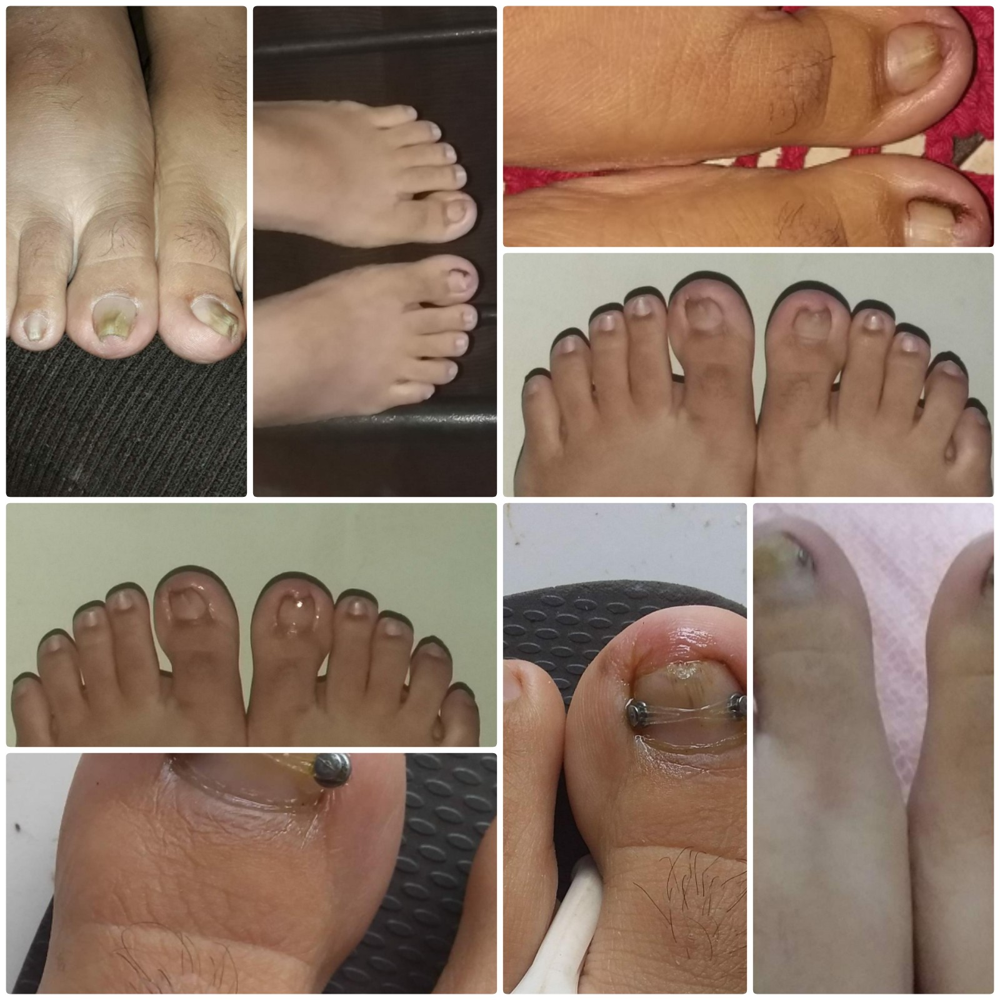
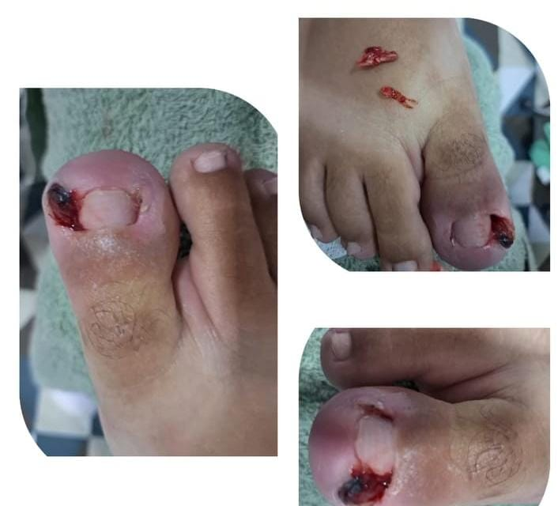
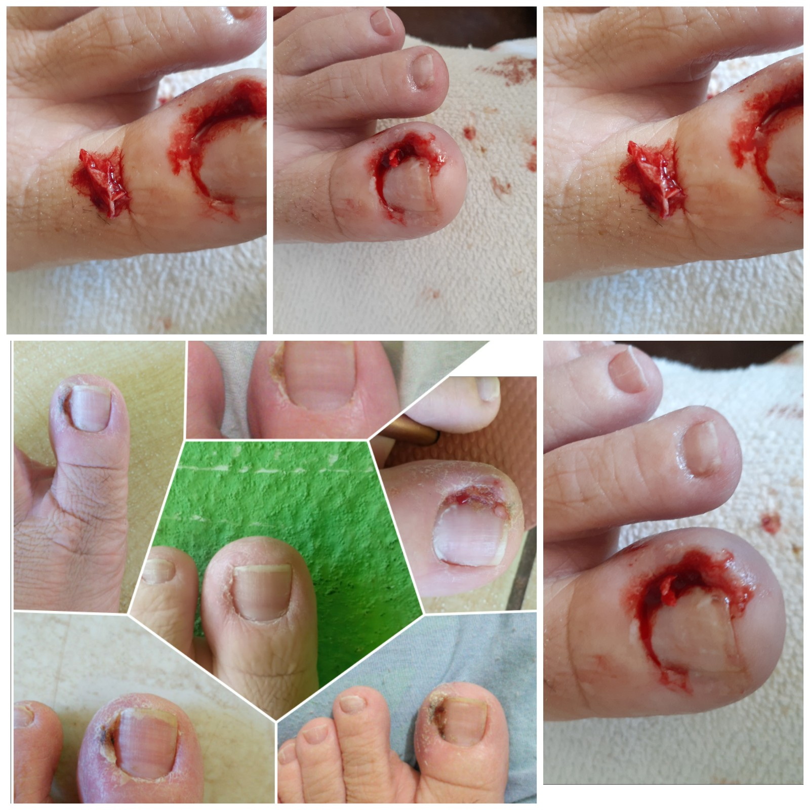
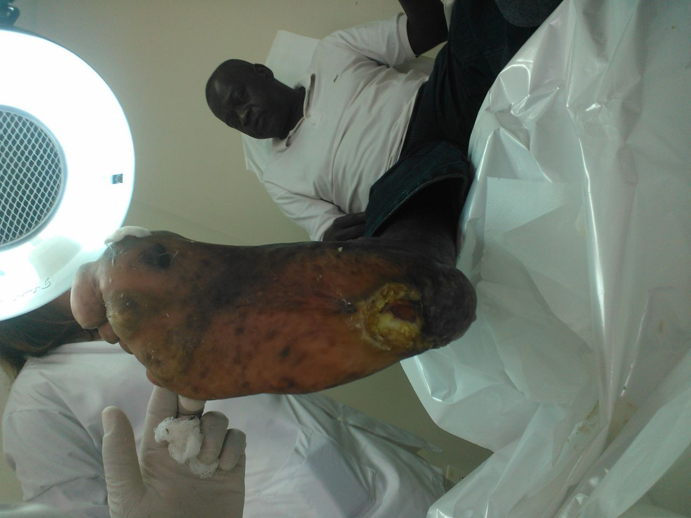

Órtese ungueal
Procedimento que utiliza um dispositivo aplicado à unha para auxiliar no tratamento de alterações no seu formato e crescimento, conforme avaliação profissional.
Saiba mais →Cuide da saúde dos seus pés com atenção, carinho e profissionalismo. Conheça os serviços de podologia de Cecília Rosana.

Cuidado especial com a saúde dos seus pés.
Conheça alguns dos cuidados oferecidos para ajudar a manter a saúde, o conforto e o bem-estar dos seus pés.

Procedimento que utiliza um dispositivo aplicado à unha para auxiliar no tratamento de alterações no seu formato e crescimento, conforme avaliação profissional.
Saiba mais →
Cuidado especializado para unhas encravadas, com avaliação da região afetada e orientação adequada para cada caso.
Saiba mais →
Atenção à saúde dos pés, com avaliação individualizada e cuidados adequados às necessidades de cada pessoa.
Saiba mais →
Avaliação e cuidado das áreas de pele espessada dos pés, buscando melhorar o conforto e orientar a prevenção.
Saiba mais →Tem dúvidas sobre qual atendimento é indicado para você?
Converse com a CecíliaConfira algumas imagens relacionadas aos procedimentos e aos cuidados realizados na podologia.


Para saber mais sobre os procedimentos, entre em contato.
Falar pelo WhatsAppA podologia é uma área dedicada aos cuidados com a saúde dos pés, contribuindo para o conforto, a prevenção de problemas e a qualidade de vida.
Cecília Rosana valoriza um atendimento atencioso, respeitando as necessidades individuais de cada pessoa e buscando oferecer uma experiência acolhedora.
Cada atendimento deve considerar as condições apresentadas pelo cliente, com orientações adequadas e encaminhamento a outros profissionais de saúde quando necessário.
Entre em contatoAtenção às necessidades e ao conforto de cada cliente.
Orientações e cuidados conforme cada situação.
Atenção à saúde dos pés e aos cuidados preventivos.
Confira algumas informações importantes antes de agendar.
A podologia é voltada à avaliação e aos cuidados com os pés e as unhas. O atendimento depende das necessidades de cada pessoa.
Você pode entrar em contato pelo botão do WhatsApp disponível nesta página para consultar os horários.
O horário informado é de segunda-feira a sábado, das 08h às 17h. Entre em contato para confirmar a disponibilidade.
Você pode entrar em contato para receber orientações sobre o atendimento adequado. Se a dor for intensa, houver ferida, vermelhidão importante ou sinais de infecção, procure avaliação de um profissional de saúde.
Sim. Pessoas com diabetes devem ter atenção especial à saúde dos pés. É importante informar essa condição antes do atendimento e seguir as orientações da equipe de saúde responsável.
Entre em contato com Cecília Rosana para tirar dúvidas e consultar a disponibilidade de horários.
Agendar pelo WhatsAppRua Gavilhão Mateiro, 75
Entre em contato para confirmar a localização.
Segunda a sábado
08h às 17h